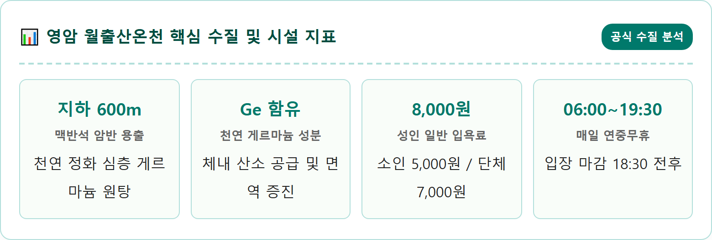
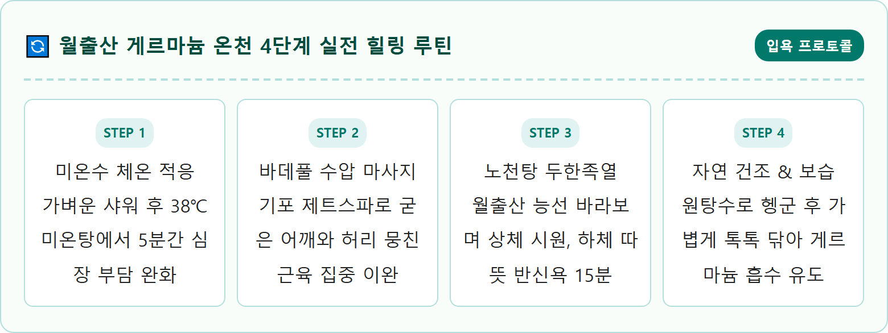
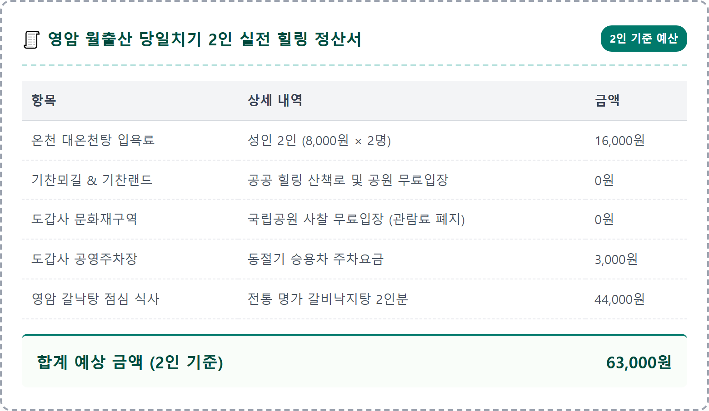
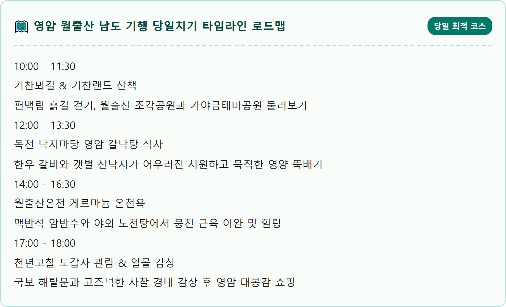
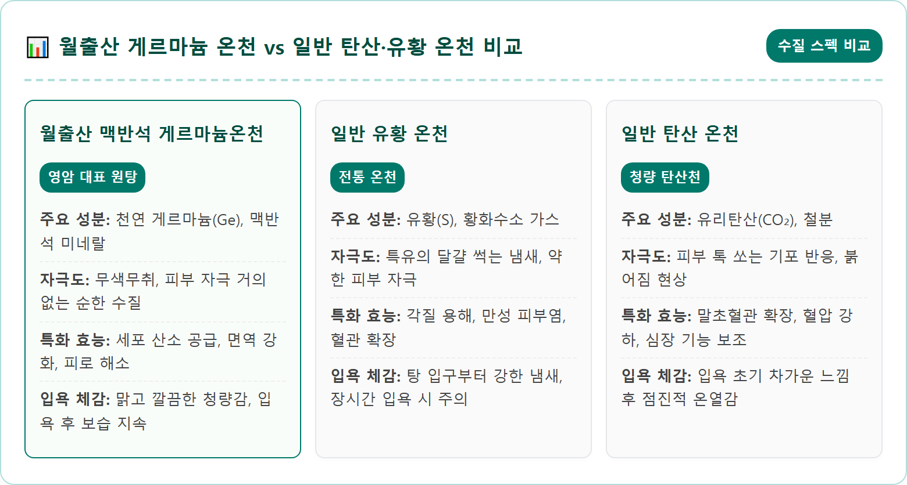
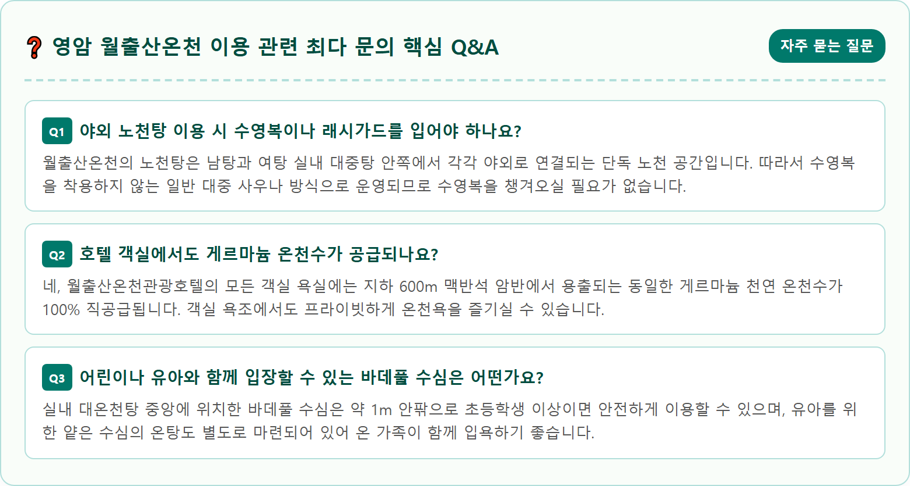

A cinematic, hyper-realistic late autumn landscape photograph of Wolchulsan National Park and hot springs in Yeongam, South Korea. The dramatic and rugged granite peaks of Wolchulsan Mountain rise sharply in the background under soft golden afternoon sunlight. In the foreground, peaceful outdoor natural stone hot spring baths release gentle swirls of translucent steam into the cool mountain air. Beside the baths, tranquil pine trees and golden-yellow leaves of late autumn gently frame the scenery. Extremely detailed rock textures, crystal clear thermal water, serene and rejuvenating wellness atmosphere, photorealistic, 8k resolution, perfectly centered 1:1 aspect ratio.
전라남도 영암군에 우뚝 솟은 월출산은 '달이 뜨는 산'이라는 서정적인 이름과 함께 기묘한 형상의 거대한 화강암 바위들이 수직으로 솟아올라 호남의 소금강으로 불리는 명산입니다. 예로부터 산 전체가 거대한 맥반석(麥飯石) 암반 덩어리로 이루어져 있어 기(氣)가 가장 충만한 영산으로 숭상받아 왔습니다. 이러한 월출산의 신비로운 지질학적 에너지가 땅속 깊은 곳에서 정화되고 응축되어 분출된 것이 바로 '월출산온천'입니다.
월출산온천의 가장 결정적인 차별점은 바로 수원지 암반입니다. 인위적인 시추로 얕은 층에서 퍼 올린 물이 아니라, 태곳적부터 형성된 순수 맥반석 지하 600m 균열대에서 솟아나는 천연 암반수를 100% 원탕으로 직공급합니다. 맥반석은 수많은 다공질 구조를 지니고 있어 중금속과 오염물질을 흡착 분해하고, 물속에 인체에 유익한 미네랄과 산소를 끊임없이 방출하는 천연 필터 역할을 담당합니다.
초겨울의 차가운 공기가 옷깃을 여미게 할 때 월출산온천에 들어서면, 맥반석을 거쳐 여과된 온천수 특유의 투명함과 맑은 청량감이 시각과 촉각을 동시에 사로잡습니다. 매끄러우면서도 부드러운 수질은 탕에 몸을 담그자마자 피부에 감기듯 밀착되며, 겨우내 긴장되어 있던 말초신경과 근육을 나른하게 이완시켜 일상에 지친 현대인에게 깊은 재충전의 시간을 선사합니다.

월출산온천수가 학계와 온천 애호가들에게 '기적의 약수'로 불리는 주된 이유는 풍부한 '게르마늄(Germanium)' 함량에 있습니다. 유기 게르마늄 성분은 혈액 내에서 산소를 세포 구석구석까지 원활하게 공급하는 운반체 역할을 수행하여, 신진대사를 촉진하고 체내에 쌓인 젖산과 독소 물질을 신속하게 땀으로 배출시키는 데 탁월한 효과가 있습니다.
또한 칼륨, 칼슘, 마그네슘, 규산 등 20여 종이 넘는 필수 미네랄이 균형 있게 용존되어 있어 신경통, 관절염, 요통, 오십견 등 만성 근골격계 통증을 앓고 있는 분들에게 뛰어난 물리치료적 온천욕 효과를 제공합니다. 온천수에 정기적으로 입욕하는 지역 주민들의 경우 아토피 피부염, 건선, 알레르기성 피부 가려움증이 크게 완화되었다는 경험담이 이어지고 있습니다.
최적의 피로 회복을 위한 월출산 온천욕은 3단계 순서가 권장됩니다. 먼저 38~39℃의 미온탕에서 몸을 천천히 적응시킨 뒤, 40~42℃의 열탕으로 이동해 수압 마사지 제트스파(바데풀)를 이용해 뭉친 허리와 어깨를 집중 마사지합니다. 마지막으로 야외 노천탕으로 나가 상체는 시원한 영암의 겨울 공기를 쐬고 하체는 따뜻한 온천수에 담그는 '두한족열(頭寒足熱)' 반신욕을 15분간 유지하면 자율신경계가 안정되며 극상의 개운함을 맛볼 수 있습니다.

영암 월출산온천은 전라남도 영암군 군서면 마한로 일대에 자리한 '월출산온천관광호텔' 부속 시설로 운영되고 있습니다. 오랜 세월 남도를 대표해 온 종합 온천 휴양시설로서 1,500명 이상을 동시에 수용할 수 있는 웅장한 대온천탕 규모를 갖추고 있으며, 실내 대형 바데풀과 건·습식 사우나, 그리고 사계절 개방되는 야외 노천탕까지 알차게 구비되어 있습니다.
2026년 기준 대온천탕 이용 요금은 성인 8,000원, 소인(24개월~미취학) 5,000원입니다. 30명 이상 단체 방문객의 경우 7,000원으로 할인되며, 월출산온천관광호텔 투숙객에게는 입욕 할인 혜택이 주어집니다. 영암군민과 인근 목포, 나주 등 전남 도민들도 주말마다 온천욕을 즐기기 위해 즐겨 찾는 생활 속 힐링 명소입니다.
운영 시간은 매일 아침 06:00부터 저녁 19:30까지 운영되며, 입장 마감은 18:30입니다. 정기 휴무일 없이 365일 연중무휴로 운영되어 언제든 안심하고 일정을 잡을 수 있습니다. 주차장은 호텔 전면과 측면에 걸쳐 대형 버스와 승용차 수백 대를 넉넉하게 수용할 수 있는 무료 전용 주차장이 마련되어 있어 초보 운전자도 스트레스 없이 주차할 수 있습니다.

온천욕으로 나른해진 몸에 기분 좋은 활력을 불어넣고 싶다면, 월출산온천 바로 인근에서 시작되는 '월출산 기찬뫼길' 트레킹을 강력하게 추천합니다. 기찬뫼길은 험준하기로 소문난 월출산의 기암괴석 봉우리를 직접 오르는 힘든 등산로가 아니라, 산자락의 완만한 등고선을 따라 숲속 오솔길 형태로 조성된 대표 친환경 웰빙 산책로입니다.
총 연장 약 40km에 달하는 기찬뫼길 중에서도 가장 걷기 좋고 경관이 빼어난 핵심 구간은 '천황사지구에서 기찬랜드를 거쳐 도갑사'로 이어지는 코스입니다. 길 대부분이 평탄한 황톳길과 천연 흙길, 그리고 나무 데크로드로 마감되어 있어 가벼운 옷차림과 운동화만으로도 어르신이나 어린이를 동반한 가족 단위 나들이객이 안락하게 산책을 즐길 수 있습니다.
초겨울의 기찬뫼길을 걷다 보면 쭉쭉 뻗은 푸른 편백나무 숲과 소나무 숲이 이어지며 코끝을 상쾌하게 자극하는 피톤치드 향이 가득 차오릅니다. 나뭇가지 사이로 고개를 들면 병풍처럼 펼쳐진 월출산 천황봉과 사자봉의 웅장한 바위 절벽이 하얀 눈이나 서리를 이고 있는 환상적인 풍경이 펼쳐집니다. 발아래 사각거리는 마른 낙엽 소리를 들으며 맑은 산 공기를 깊게 들이마시는 것만으로도 도심의 묵은 스트레스가 말끔히 정화됩니다.

기찬뫼길의 종착점이자 월출산 서쪽 자락에 자리 잡은 '도갑사(道岬寺)'는 신라 말기 도선국사가 창건한 천년고찰로, 온천욕 전후에 마음을 정돈하기 위해 반드시 들러보아야 할 문화유산입니다. 숲길을 따라 경내로 들어서면 가장 먼저 마주하는 건물이 바로 조선 초기의 대표적인 다포 양식 건축물이자 국보 제50호로 지정된 '도갑사 해탈문(解脫門)'입니다.
속세의 번뇌를 씻어내고 해탈의 경지로 들어선다는 의미를 지닌 해탈문은 정면 3칸, 측면 2칸의 단아하면서도 절제된 비례미를 자랑합니다. 해탈문 좌우에는 국물 문화재인 목조 문수동자상과 보현동자상이 온화한 미소를 띠고 방문객을 맞이합니다. 단청의 빛바랜 고색창연함과 서까래의 유려한 곡선은 바라보는 것만으로도 마음속에 잔잔한 평온을 선물합니다.
사찰 경내로 더 깊이 들어가면 대웅보전 뒤편으로 월출산의 기암괴석 봉우리들이 부처님의 후광처럼 병풍을 두르고 있습니다. 바람이 불 때마다 처마 끝 풍경이 맑고 청아한 금속음을 울리고, 겨울 햇살이 비추는 돌계단과 수백 년 수령의 팽나무 군락은 번잡한 관광지와는 비교할 수 없는 고즈넉한 사색의 공간을 마련해 줍니다.

기찬뫼길 초입에 조성된 '영암 기찬랜드'는 여름철 계곡형 자연 풀장으로 유명하지만, 늦가을과 겨울에는 차분하게 산책과 문화 예술을 음미할 수 있는 복합 문화 쉼터로 변신합니다. 천혜의 자연 계곡을 정비한 수변 산책로를 따라 기찬뫼길 조각공원이 넓게 펼쳐져 있어 자연과 조화를 이룬 다채로운 야외 조각 예술품을 감상할 수 있습니다.
기찬랜드 내에서 가장 주목할 문화 공간은 바로 '가야금산조 기념관'입니다. 영암은 가야금산조의 창시자인 악성 김창조(金昌祖) 선생의 고향으로, 한국 전통 기악곡의 정수로 불리는 산조의 역사와 유물을 집대성해 놓은 유일무이한 테마 기념관입니다. 전시관 내부에는 김창조 선생의 유품과 함께 산조의 유파별 계보, 희귀 고악기들이 전시되어 있습니다.
운이 좋다면 국악 공연장에서 울려 퍼지는 애절하면서도 화려한 가야금 선율을 직접 마주할 수도 있습니다. 맑은 겨울바람 소리와 함께 계곡을 타고 울려 퍼지는 오동나무 현의 울림은 남도 여행에서만 느낄 수 있는 깊은 감수성을 일깨워 줍니다. 아이들에게는 훌륭한 전통문화 교육의 장이 되고, 어른들에게는 고즈넉한 여유를 안겨주는 필수 경유지입니다.
월출산온천 여행의 화룡점정은 입안 가득 감동을 선사하는 영암의 독보적인 토속 음식, '갈낙탕'을 맛보는 일입니다. 온천에서 차량으로 15분 거리인 영암군 학산면 독천리는 전국적으로 이름난 '독천 낙지마을(낙지거리)'이 형성되어 있을 만큼 예로부터 영산강 하구와 갯벌에서 잡아 올린 싱싱한 세발낙지 요리로 명성을 떨쳐왔습니다.
갈낙탕은 이름 그대로 기름기가 잘 손질된 고소한 한우 소갈비와 갯벌의 산삼으로 불리는 쫄깃한 산낙지를 한 뚝배기에 넣고 진하게 끓여낸 최고의 보양 탕 요리입니다. 갈비에서 우러나온 진하고 묵직한 고기 육수에 낙지 특유의 시원하고 개운한 바다 맛이 더해져 국물 한 모금을 삼키는 순간 탄성이 절로 터져 나옵니다.
푹 익은 갈비살은 뼈에서 쏙 빠질 만큼 부드럽고, 살짝 데치듯 익혀낸 낙지는 야들야들하면서도 찰진 식감을 자랑합니다. 뚝배기 한 그릇을 비우고 나면 곁들여 나오는 남도식 어리굴젓, 갓김치, 파김치와 함께 밥 한 공기가 순식간에 사라집니다. 만약 국물 요리 대신 담백한 맛을 선호하신다면 갯벌 짱뚱어를 뼈째 갈아 구수하게 끓여낸 '짱뚱어탕'이나 산낙지를 볏짚에 말아 구운 '낙지호롱구이'도 겨울철 놓치기 아까운 남도 진미입니다.
영암은 서해안고속도로 목포 IC와 강진~영암 간 국도가 사통팔달로 연결되어 있어 광주, 전주, 목포 등 호남권 주요 도시는 물론 수도권에서도 서해안고속도로를 타고 접근하기 편리합니다. 온천욕과 산책, 문화재 관람, 남도 미식까지 완벽하게 아우르는 당일치기 드라이브를 계획하신다면 동선의 낭비를 최소화하는 순환 경로가 이상적입니다.
오전 10시경 영암에 도착해 기찬뫼길과 가야금산조 테마공원을 가볍게 걸으며 상쾌한 숲 공기를 마신 뒤, 12시경 독천 낙지골목으로 이동해 뜨끈한 갈낙탕으로 든든한 점심 식사를 즐깁니다. 오후 1시 30분경 월출산온천 대온천탕으로 이동하여 2시간가량 노천탕과 바데풀에서 여유롭게 게르마늄 온천욕을 즐기며 몸의 피로를 완벽하게 날려버립니다.
온천욕 후 오후 4시경 천년고찰 도갑사로 이동하여 국보 해탈문을 둘러보고 월출산 서쪽 산자락으로 붉게 물들어가는 남도의 장엄한 겨울 노을을 감상한 뒤 귀갓길에 오르면 몸과 마음이 완벽하게 힐링되는 최고의 하루 코스가 완성됩니다. 도로망이 쾌적하고 신호 대기가 적어 초보 운전자도 여유롭게 드라이브를 만끽할 수 있습니다.

영암 여행을 마치고 집으로 돌아갈 때 가족과 지인들을 위한 정성스러운 선물로 빼놓을 수 없는 로컬 특산품은 바로 '영암 금정 대봉감'과 '영암 무화과'입니다. 영암군 금정면 일대는 사면이 산으로 둘러싸이고 가을철 일교차가 극심하여 감의 떫은맛이 빠지고 당도가 응축되는 최적의 기후 조건을 갖추고 있어 전국 대봉감 생산량의 핵심 거점으로 꼽힙니다.
주먹만 한 크기를 자랑하는 대봉감은 상온에 며칠 두면 껍질이 얇아지고 붉은 홍시로 자연스럽게 익어가는데, 숟가락으로 떠먹으면 천연 젤리처럼 부드럽고 꿀처럼 달콤한 과즙이 일품입니다. 겨울철 장기 보관을 위해 곶감이나 감말랭이 형태로 가공된 제품도 쫀득쫀득한 식감과 깊은 단맛으로 남녀노소 영양 간식으로 각광받고 있습니다.
또한 영암은 국내 최대의 무화과 주산지이기도 합니다. 생무화과 수확 철이 지난 겨울철에는 유기농 무화과로 정성껏 졸여낸 무화과 수제 잼, 무화과 양갱, 그리고 무화과 발효 식초 등이 선물용으로 큰 인기를 끕니다. 독천 낙지거리나 온천 인근 로컬푸드 직판장에서 산지 특유의 넉넉한 덤과 함께 신선한 농산물을 챙기며 영암에서의 따뜻한 겨울 힐링 여정을 마무리해 보시기 바랍니다.
| 구분 | 세부 내용 | 이용 꿀팁 및 안내 |
|---|---|---|
| 위치 주소 | 전남 영암군 군서면 마한로 119-11 (월출산온천관광호텔) | 내비게이션: 월출산온천 또는 월출산온천관광호텔 |
| 이용 요금 | 대인 8,000원 / 소인(24개월~미취학) 5,000원 | 단체(30인 이상) 7,000원 / 투숙객 할인 |
| 영업 시간 | 매일 06:00 ~ 19:30 (입장 마감 18:30) | 연중무휴 365일 운영 |
| 수질 특징 | 맥반석 지하 600m 천연 게르마늄 원탕 | 체내 산소 공급, 피로 해소, 신경통·피부염 개선 |
| 부대 시설 | 대온천탕, 바데풀, 야외 노천탕, 건습식 사우나 | 수백 대 수용 무료 대형 전용 주차장 구비 |
| 연계 명소 | 기찬뫼길 산책로(5분), 도갑사(10분) | 독천 낙지마을(15분), 기찬랜드(5분) |